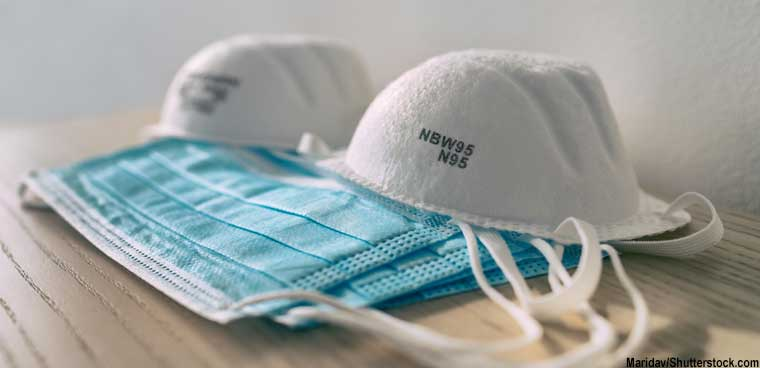

Why PPE acquisition looks so shady

If you're following news accounts of states and hospitals trying to secure needed mask and gowns amid the COVID-19 pandemic, it would appear that the market for acquiring personal protective equipment is the second coming of drug trafficking.
State governments trying to acquire personal protective gear and tests are facing shortages, markups, a confusing supply chain and a patchwork of federal rules, according to experts, lawmakers and some former federal officials.In some case, conflicting mandates and foot-dragging by the Trump administration are further complicating the situation.
That emerging federal mixture of COVID response capabilities --including increasing leverage of the Defense Production Act, bolstering the federal stockpile and pursuing law enforcement and customs concerns about price gouging -- is driving cloak-and-dagger deals by state governments and medical institutions.
In a New England Journal of Medicine report, Baystate Medical Center chief physician executive Dr.Andrew Artenstein said his hospital faced questioning from the FBI about whether a huge shipment of PPE from China it negotiated was bound for the black market.Artenstein said he was also concerned the Department of Homeland Security might divert the shipment to others destinations in the U.S.He said the gear was sent to his Massachusetts hospital in semi-trucks disguised as food service vehicles to avoid interference.
Maryland Gov.Larry Hogan said at an April 20 news conference that he navigated a web of federal red tape to get 500,00 COVID test kits into the U.S. from South Korea.Hogan said he and his Korean-born wife had personally negotiated with South Korean test kit suppliers for the shipment.Yet after spending almost a month vetting and setting protocols with state agencies and doctors, he said, at the last minute the shipment faced 'clearances across multiple U.S. agencies, including the FDA, the USDA, and Customs and Border Patrol' to complete.
The Chicago Sun Times reported on April 15 that Illinois Gov.J.B. Pritzger planned to acquire millions of masks and gloves from China and bring those supplies back to the state on chartered jets.Pritzger said he is keeping details of the deal secret for fear that the cargo might be seized by the Trump administration for the federal stockpile.
Former Customs and Border Protection Commissioner Gil Kerlikowske told FCW via email that he's been helping local governments and hospitals navigate the importation process for PPE goods.
Kerlikowske said he had helped Tufts Medical Center and the Miami Police Department with separate orders for medical masks from China.The shipments were stopped and held by CBP at the port of entry because an FDA order determined the masks did not meet certain standards.
Both orders were ultimately released, said Kerlikowske.The FDA ultimately adjusted those importation protocols for the masks and other PPE in mid-April.
Some lawmakers and federal officials said the extraordinary efforts by state governments were illustrative of the Trump administration's tardiness in deploying the Defense Production Act to speed manufacture of needed items -- and also in naming a central federal point of acquisition and distribution for the gear.
'Early on the president said 'we're not shipping clerks,'' Jeh Johnson, former secretary of the Department of Homeland Security, said April 21.'That
is the federal government's central role—to insure states get adequate supplies of PPE, ventilators and masks.That's its number one priority.'
'If someone is depending on their wife to get test kits, it shows the federal response is a patchwork,' said Rep.Bennie Thompson (D-Miss.), who chairs the House Homeland Security Committee.'We should be doing better.With a national disaster, we should be in a position to allocate through the Defense Production Act' and through the Federal Emergency Management Agency, he said.
'FEMA's principle role' during a national crisis, 'is to provide resources,' Johnson agreed.
Some federal procurement executives speaking to FCW on background conceded that the White House's relatively late response to the pandemic is pushing states to such extremes.However, they said supply and demand was bound to enter the picture too, especially as needs escalated.
'Earlier coordination may have mitigated some of this,' said one official.'FEMA and the Defense Logistics Agency are the central sources' for PPE gear from the federal government.
DLA has been sharing PPE inside and outside the military, according to Ellen Lord, the Defense Department's top acquisition official.At an April 20 briefing, Lord said DLA has moved 1.8 million N95 masks along with surgical masks, gloves, gowns and 8,000 ventilators across the military services and to other federal agencies.As a whole, Lord said, the DOD has provided 10 million N95 masks to HHS and FEMA, with 10 million more on the way from DOD stockpiles.
Those agencies are moving on two fronts to procure PPE federally, which can conflict with individual efforts by states to satisfy their immediate needs, they said.The first federal front is to build the national stockpile for PPE.FEMA decides how to dole out those supplies to states based on demand.The second is for new PPE, which can involve the use of the Defense Production Act (DPA).
Although it took some time, Trump has used the DPA to compel federal contractors to produce PPE and other gear, such as ventilators.One procurement expert noted that the DPA can't force companies to make things.Companies must accept federal work before the act can be invoked, they said.Those companies can then get prioritized federal procurement orders that can jump ahead of commercial contracts.
Lord noted at her briefing that a $133 million effort under the Defense Production Act is underway to increase U.S. production of N95 masks.
About the Author
Mark Rockwell is a senior staff writer at FCW, whose beat focuses on acquisition, the Department of Homeland Security and the Department of Energy.
Before joining FCW, Rockwell was Washington correspondent for Government Security News, where he covered all aspects of homeland security from IT to detection dogs and border security.Over the last 25 years in Washington as a reporter, editor and correspondent, he has covered an increasingly wide array of high-tech issues for publications like Communications Week, Internet Week, Fiber Optics News, tele.com magazine and Wireless Week.
Rockwell received a Jesse H.Neal Award for his work covering telecommunications issues, and is a graduate of James Madison University.
Click here for previous articles by Rockwell.Contact him at mrockwell@fcw.com or follow him on Twitter at @MRockwell4.
Posted On: 2020-04-22T00:00:00
Posted By: Mark Rockwell
Content Date: 2020-04-22
Download Date: 2021-05-30
Document ID: L0C04CNM8